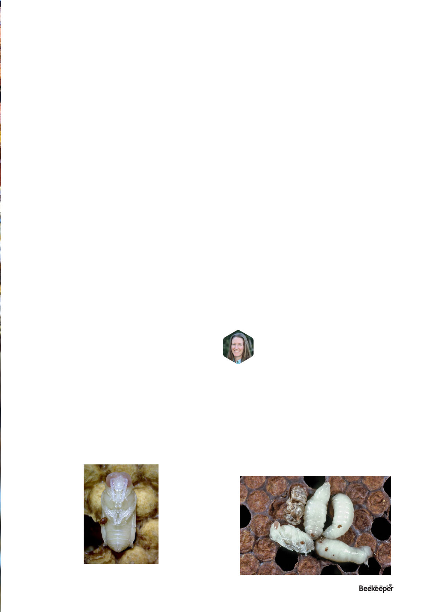

• Available drones too closely related to the queen
• Poor brood viability: brood pattern visibly patchy
• Early supersedure: runs out of stored sperm & culled by
workers
• Lower egg-laying capacity = lower overall hive productivity
• Hive more susceptible to environmental, pest, disease and
nutritional stressors
Additionally, it’s been shown that well-mated queens pro-
duce hives that typically outperform poorly mated queens in
honey production and are more resilient to stressors.
When beekeepers need to actively produce and retain high
numbers of drones, Varroa reproduction increases and may
result in more frequent mite treatment. On average, Varroa
produce 1.4 mature females when they reproduce in worker
brood versus 2.4 mature females in drone brood (Fig 1). Each
Varroa may complete 1-3 reproductive cycles.
Recipe for ample drones and well-mated queens:
• Introduce drone comb into “drone mother” hives at least 40
days before you need mature, adult drones
• Produce a minimum of 28 drones per queen. (Aim for 30+
drones per queen as not all drones make it to sexual matu-
rity)
• Ensure a continuous supply of incoming, fresh pollen and
light nectar flow. If this isn’t available, provide supplements
or move to better conditions
• Maintain varroa levels all season around the thresholds
recommended in the National Varroa Mite Management
Program (website: varroa.org.au).
Take this winter to refresh your knowledge on drone pro-
duction (aka “drone mother”) management from my AgGuide:
Queen bee breeding (currently in revision!) or drone guru Dr.
John Rhodes’ factsheet “Drone honey bees – rearing and main-
tenance.” John studied Australian drone quality during his PhD.
He stressed the following:
The four basic requirements of drone rearing and main-
tenance:
• The provision of surplus quality pollen at all times is essen-
tial to produce adequate numbers of mature drones, as is
sufficient sugar syrup or honey stores. The pollen may be
either a natural pollen or a protein supplement to comple-
ment the pollen available from the environment (quality and
quantity)
• Use strong colonies headed by a proven queen preferably
more than one year old
• Drones are produced earlier if a drone comb is placed in the
middle of the brood chamber in autumn, preferably a comb
with a mixture of drone and worker cells. In spring add one
or two frames containing drone cells as hive strength and
weather conditions allow
• Drone mother colonies require the same amount of man-
agement as queen cell raising colonies.
An additional requirement with varroa will be to monitor
your mite levels monthly and treat as necessary to keep your
levels at or below threshold. Look into all available Varroa
mite treatments, which ones are effective during the breeding
season and how they may affect drone rearing. Formic Pro for
example may have adverse effects on open brood, hatching
bees, and cause workers to remove drone eggs, thus delay-
ing drone production, as noted by the National Varroa Mite
Management Program (varroa.org.au).
Drone mother stocking rate
• Stocking rate is based on the following:
• Virgin queens mate with an average of 28 drones
• One full-depth drone comb may yield 3,500 mature drones
in perfect conditions (when does this ever happen?)
• Environmental conditions vary (pollen, nectar availability)
• Absence of feral drones
• Presence of other managed drones with undesirable genet-
ics.
Think about your queen and drone needs for next season
and get planning ahead with the resources below.
Further reading
• Frost, E. A. & Somerville, D. C. (2020) AgGuide: Queen bee
breeding. NSW DPI.
• National Varroa Mite Management Program. “Varroa mite
integrated pest management.” www.varroa.org.au/ipm
• Rhodes, J. (2002) “Drone honey bees – rearing and main-
tenance.”
www.dpi.nsw.gov.au/__data/assets/pdf_
file/0007/117439/drone-bee-rearing-and-maintenance.pdf
Elizabeth Frost is the honey bee Technical Specialist
of the NSW Dept. of Primary Industries. Frost co-
manages Australia’s National Honey Bee Genetic
Improvement Program (Plan Bee) with Dr. Nadine
Chapman of University of Sydney, University of New
England’s Animal Genetics and Breeding Unit, Better
Bees WA, the Wheen Bee Foundation and beekeeping
and horticulture industry stakeholders. Frost provides
technical assistance to the beekeeping industry,
government, media and the public and teaches queen
bee artificial insemination courses at Tocal Agricultural
College. Previously she worked at the Bee Research Lab
at University of California Davis.
• Figure 1
Vol. 127 | No. 4 |
| 33